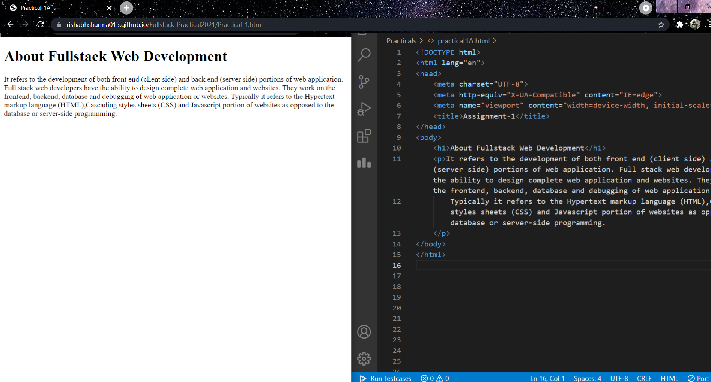

Visual Studio Code is a offline source-code editor made by Microsoft for Windows.
Visual Studio Code is a streamlined code editor with support for development operations like debugging, task running, and version control.
It aims to provide just the tools a developer needs for a quick code-build-debug cycle and leaves more complex workflows to fuller featured IDEs, such as Visual Studio IDE.

CodePen is online community edition software that is extensively used for testing and showcasing user-created code snippets in languages like HTML, CSS, and JavaScript. It functions as an online code editor, is open-source and free. You can easily create small code snippets which are popularly known as "pens", thus the name CodePen.